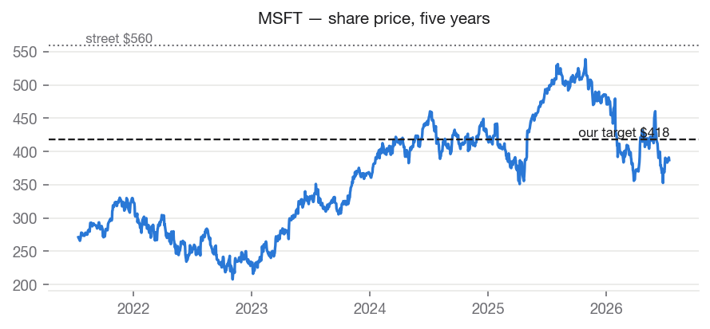
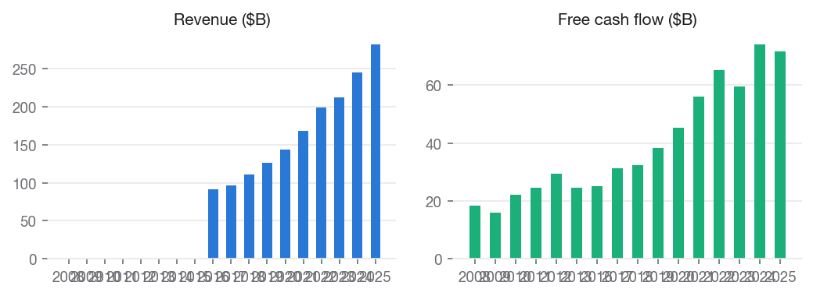
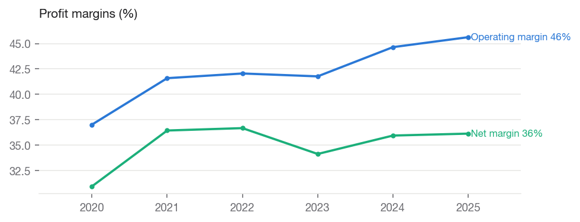
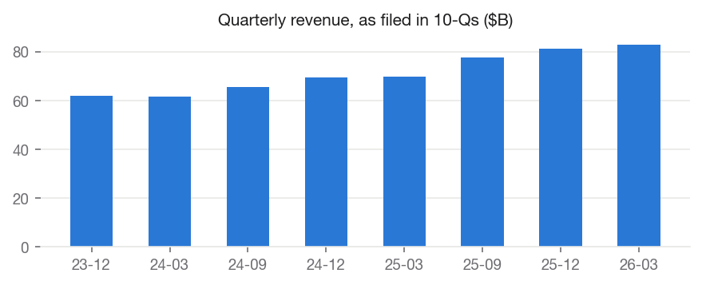
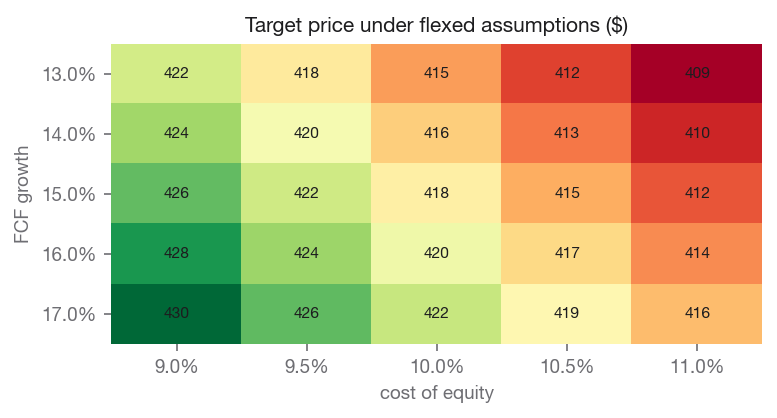

We rate MSFT HOLD with a price target of $418.28, against a current price of $387.20 (+8.0% implied return). Within our coverage universe, the name ranks Overweight.
The target blends independent valuation lenses: discounted cash flow values the shares at $218.05; peer comparables values the shares at $466.55; own historical multiple values the shares at $636.96.
Our target sits -25.3% vs. street consensus of $559.86. The divergence is our documented view, not an input: consensus never enters the models.
Economic backdrop (FRED, latest readings):
| Indicator | Latest | As of | 1y ago | Change |
|---|---|---|---|---|
| Effective Federal Funds Rate (%) | 3.63 | 2026-06-01 | 4.33 | -0.70 |
| 10-Year Treasury Yield (%) | 4.56 | 2026-07-10 | 4.35 | +0.21 |
| 10Y-2Y Treasury Spread (%) | 0.36 | 2026-07-13 | 0.53 | -0.17 |
| Consumer Price Index (level) | 332.57 | 2026-06-01 | 321.44 | +11.13 |
| Unemployment Rate (%) | 4.20 | 2026-06-01 | 4.10 | +0.10 |
| U. Michigan Consumer Sentiment | 44.80 | 2026-05-01 | 52.20 | -7.40 |
| Personal Consumption Expenditures ($B) | 22,059.80 | 2026-05-01 | 20,755.00 | +1,304.80 |
Cost of equity: 10.02% (10Y Treasury 4.56% risk-free base, CAPM).
Macro linkages applied to this valuation (rule-based, capped; see MACRO_CATALOG.md):
Microsoft Corporation develops and supports software, services, devices, and solutions worldwide. The Productivity and Business Processes segment offers Microsoft 365 commercial, enterprise mobility + security, windows commercial, power BI, exchange, sharepoint, Microsoft teams, security and compliance, and copilot; Microsoft 365 commercial products, such as Windows commercial on-premises and office licensed services; Microsoft 365 consumer products and cloud services, including Microsoft 365 consumer subscriptions, office licensed on-premises, and other consumer services; LinkedIn; dynamics products and cloud services, such as dynamics 365, cloud-based applications, and on-premises ERP and CRM applications. Its Intelligent Cloud segment provides Server products and cloud services comprising Azure and other cloud services, GitHub, Nuance Healthcare, virtual desktop offerings, and other cloud services; server products, including SQL and windows server, visual studio and system center related client access licenses, and other on-premises offerings; enterprise and partner services, such as enterprise support and nuance professional services, industry solutions, Microsoft partner network, and learning experience. The Personal Computing segment provides windows and devices, such as Windows OEM licensing and devices and surface and PC accessories; gaming services and solutions, such as Xbox hardware, content, and services, first- and third-party content Xbox game pass, subscriptions, and cloud gaming, advertising, and other cloud services; search and news advertising services. It sells its products through OEMs, distributors, and resellers; and online and retail stores. The company has a strategic collaboration with Mayo Clinic, Inc. for the development of a frontier AI model for healthcare; and Global Objects, Inc. to build a retrieval-grounded generative AI world model. The company was founded in 1975 and is headquartered in Redmond, Washington.
Annual figures from SEC EDGAR as-filed XBRL data (10-K).
| Fiscal year | Revenue | Net margin | Op margin | ROE | Free cash flow |
|---|---|---|---|---|---|
| 2020 | $143.0B | +31.0% | +37.0% | +37.4% | $45.2B |
| 2021 | $168.1B | +36.5% | +41.6% | +43.2% | $56.1B |
| 2022 | $198.3B | +36.7% | +42.1% | +43.7% | $65.1B |
| 2023 | $211.9B | +34.1% | +41.8% | +35.1% | $59.5B |
| 2024 | $245.1B | +36.0% | +44.6% | +32.8% | $74.1B |
| 2025 | $281.7B | +36.1% | +45.6% | +29.6% | $71.6B |
Revenue CAGR: +12.4% (3y), +14.5% (5y). Net income CAGR (5y): +18.1%. FCF CAGR (5y): +9.6%.


| Quarter ended | Revenue | Net income | Diluted EPS |
|---|---|---|---|
| 2023-12-31 | $62.0B | $21.9B | $2.93 |
| 2024-03-31 | $61.9B | $21.9B | $2.94 |
| 2024-09-30 | $65.6B | $24.7B | $3.30 |
| 2024-12-31 | $69.6B | $24.1B | $3.23 |
| 2025-03-31 | $70.1B | $25.8B | $3.46 |
| 2025-09-30 | $77.7B | $27.7B | $3.72 |
| 2025-12-31 | $81.3B | $38.5B | $5.16 |
| 2026-03-31 | $82.9B | $31.8B | $4.27 |

Discounted cash flow: $218.05
Peer comparables: $466.55
Own historical multiple: $636.96
Sensitivity — target price across FCF growth (rows) and cost of equity (columns):
| FCF growth | 9.0% | 9.5% | 10.0% | 10.5% | 11.0% |
|---|---|---|---|---|---|
| 13.0% | 422 | 418 | 415 | 412 | 409 |
| 14.0% | 424 | 420 | 416 | 413 | 410 |
| 15.0% | 426 | 422 | 418 | 415 | 412 |
| 16.0% | 428 | 424 | 420 | 417 | 414 |
| 17.0% | 430 | 426 | 422 | 419 | 416 |
The base free cash flow of $65.1B is measured as operating cash flow less all capital expenditure (standard basis). Growth fades from 15.0% toward 2.5%, and each year is discounted at 10.02%.
| Year | Growth | Free cash flow | Discount factor | Present value |
|---|---|---|---|---|
| 1 | +15.0% | $74.9B | 0.909 | $68.1B |
| 2 | +11.9% | $83.8B | 0.826 | $69.3B |
| 3 | +8.8% | $91.2B | 0.751 | $68.5B |
| 4 | +5.6% | $96.3B | 0.683 | $65.7B |
| 5 | +2.5% | $98.7B | 0.620 | $61.2B |
| Company | Mkt cap | P/E (ttm) | P/E (fwd) | EV/EBITDA | P/B | Net margin | ROE |
|---|---|---|---|---|---|---|---|
| MSFT (subject) | $2,876.3B | 23.1 | 20.0 | — | 6.9 | — | — |
| Apple Inc. | $4,625.5B | 38.2 | 32.8 | 29.2 | 43.4 | 27.2% | 141.5% |
| Alphabet Inc. | $4,369.3B | 27.3 | 24.5 | 26.3 | 9.1 | 37.9% | 38.9% |
| Oracle Corporation | $373.9B | 22.3 | 11.9 | 17.1 | 10.0 | 25.4% | 53.4% |
| Salesforce, Inc. | $139.0B | 18.8 | 10.9 | 13.3 | 4.1 | 18.7% | 16.9% |
| Amazon.com, Inc. | $2,649.7B | 29.5 | 24.9 | 17.7 | 6.0 | 12.2% | 24.3% |
Medians of this table drive the peer-comps lens and the DCF exit multiple. Peer selection is disclosed in universe.py and versioned.

Free primary ESG data is limited; this section reports only what can be grounded in market and filing data, and flags sector-specific exposures qualitatively.